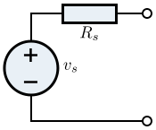

A brief review of one of the most important theorems of circuit analysis.
Thevenin's theorem allows even the most complicated circuit to be reduced to a single voltage source and a single resistance. The resulting two-terminal circuit is equivalent to the original circuit when connected to any external branch or component.
So, any linear bilateral network may be reduced to a simplified two-terminal circuit consisting of a single voltage source in series with a single resistor.
To determine VTh and RTh:
To find VTh, just find the voltage across the topmost resistor. Since this is a simple voltage divider, the open circuit voltage between terminal A and B will be 1.5 V.
To find RTh, short the voltage source and find the equivalent resistance of what is left. In this case, it would just be 2 kΩ in parallel with 2 kΩ which is equivalent to a single, 1 kΩ resistor. Therefore, RTh will be 1 kΩ.